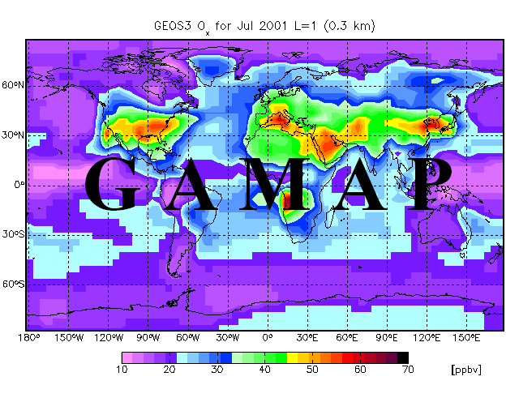

GAMAP v2–19 User Guide
Next | Printable View (no frames)


Global Atmospheric
Model (output)
Analysis Package
Version 2–19
by the GEOS–Chem Support Team
(Bob Yantosca, Melissa Sulprizio, Matt Yannetti, Lizzie Lundgren, Junwei Xu, Yanko Davila)
Released 15 Dec 2016
Contact: geos-chem-supportg.harvard.edu
Also be sure to see our GAMAP pages on the GEOS-Chem wiki!

|
Next | Printable View (no frames)

http://acmg.seas.harvard.edu/gamap/doc/